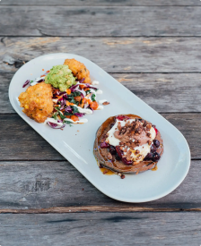
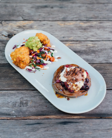

.png)
Chinese fried rice is a family of friedrice dishes popular in
Greater China and around the world. It is sometimes served as the penultimate dish in
chinese banquets.
Fried rice is a traditional chinese preparation of cooked rice, vegetables
protein, soy sauce and aromatics. The ingredients are stir-fried in a large
pan or wok for even flavor distribution.
INGREDIENTS
| S/N | INGREDIENTS | MEASUREMENTS |
|---|---|---|
| 1 | Rice | 1 cup |
| 2 | Chicken Breasts | 6 pieces |
| 3 | Peas | 1 cup |
| 4 | Chopped Carrrots | 1 cup |
| 5 | Scrammbled Eggs | 2 |
| 6 | Sweet Corn | 1 cup |
| 7 | Chopped green onions and pepper | 1 cup |
| 8 | Soy Sauce and Vegetable oil | 1 cup each |
INSTRUCTIONS
- Season your Chicken Breasts properly and boil
- Prep wok or pan with ample cooking oil
- Use a rice cooker or boil water and add rice for approximately 25-35 minutes.
- Add cooked rice, mixed vegetables and eggs into yhe heated wok or pan.
- Stir and toss until the vegetables and eggs are cooked
- Gradually add soysauce while mixing, should be a light yellowish brown when done.
 



© Copyright Amy116